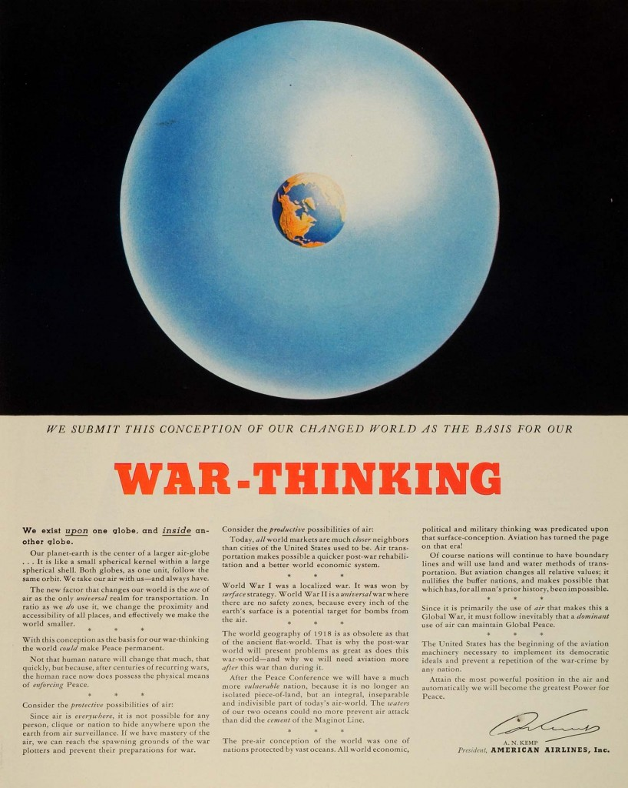

The Future Emergent--these days,it’s more The Future Propulsive or Concussive or-- the helicopters flying constantly over my house chop-chop-chopping a background beat to the fireworks I’ve been listening to continually for the past week. It’s easy to think about the future when you’re not in a state of crisis. During the state of crisis, it f eels like the future is inside the present, exploding outside of the present -- you don’t really have the ability to think about the future: it’s a train emerging at 160mph from an invisible doorway in the middle of a street or a flower bursting open a concrete brick, or both. That’s what it’s been like (felt like) recently, between Covid-19 and George Floyd, in Downtown Oakland, 2020.
Back when thinking about the future was possible, Delta_Ark used to think about it all the time. Core (2014) was an attempt to map and to live the future, in the present. We thought “since the future is already here, just not evenly distributed,” let’s make a map of its points of emergence. In the primary installation, inside of the core, one can see that map: all of the organizations, people, places, where we thought a j ust, decentralized and equitable future was emerging. We pointed to work on the techno-libertarian right-- forms of transhumanism and liberation from the body. We pointed to work on the left, eco-communes and forms of anarcho-(re)wilding. We pointed to everything we thought was not authoritarian a nd enhancing of human f reedom and support. We also, naively, tried to embody the best of these practices in our two week stay in Delhi, NY, as a kind of prefigurative community. You can imagine how that played out.
Islands, Accidents (2014) was a kind of reverse-piece to Core. Whereas Core was a demonstration of all that was right in the world, I.A. was a long poem describing the sculpture it was housed in, about a world wracked and ravaged by climate change. It was about flooded continents. Sunken oil platforms. Beasts and mutants. There’s a section of the map that says, “There be dragons.” After Climate Change there be dragons is written all over and across the map. Delta_Ark didn’t know about Paolo Bacigalupi’s novel at the time, “Drowned Cities,” but Drowned Cities is the novelization of this poem; it’s a story about war orphans in a flooded New Orleans and the militias competing for scraps of the pre-drowned world. There’s still travel, of course, but at this point in the game, it’s only with sails.
When Mary Mattingly invited Delta_Ark (and collaborators, Biome Arts) to conduct another festival and installation on her next project, we jumped at the chance. To me, “Swale,” the giant floating farm we were invited to, was different from Core and Islands Accidents. The Archive of the Ecological Future (2016), which we built inside Swale, wasn’t a grandiose vision of all that was right or all that was wrong; instead, it was one possible world, pointed in the right direction, with its flaws and its faults, but also its beauty. Delta_Ark is reminded of a particular image, a video we showed in one of our movie nights. It was called, “Rail Sail.” One of the artists had affixed a sail to some wheels and wooden boards and placed it all out on an old unused track in the midwest. The wind picked up, and the yellow sail filled up, and they were off, re-appropriating for a mesmerizing purpose, the tracks of the old world.
Recently, Delta Ark has turned farther and farther away from the future, and deeper into the immediate environment. These days, aside from trying to establish a consistent political routine of advocacy in the morning, Delta_Ark does a lot of bird watching, but in strange ways. Delta_Ark has a FPV drone that flies up to the top of the trees, in order to see all the goings-on in the high branches. Delta_Ark is training machine learning algorithms to identify individual birds as well as to categorize behaviors. Delta_Ark is training another machine learning algorithm to gather that data and use it to write poetry, automatically. Delta_Ark is taking this poetry and embedding it into a multi-player VR world where people can wander and find it. This work is called Gevurah (“God’s Might,” in English). This work, as of yet, is unfinished.
07.03.2020 watering the seeds of a new world order, Connie Zheng
*
First, a confession.
In mid-March, I wrote:
Doesn’t it feel decadent, somehow, to write poetry, or fiction, at a time like this? I was angered by the deluge of hot takes I’d been seeing in the media about focusing on one’s personal work and making work about quarantine. I found it very difficult to make my personal artwork, in lieu of an immediate focus on COVID-19 relief efforts. In March and April, I felt that all of my energy should go toward assisting essential workers and mutual aid efforts, which — given my skill set and low bank balance — essentially amounted to mask-making. I made a paltry twenty to thirty fabric masks in total and then spent most of my days trying to find alternative sources of income after I was furloughed. I planted some seeds, none of which germinated. I bought some starters and planted some leafy greens and flowers. I made marker drawings of seeds. I went for long bike rides by the ocean to settle my nerves and reel myself back from the abyss of terror. I started to write a number of ominous and macabre short stories, all related to mysterious fevers and coughs and infections, as well as somnambulism.
During the first few months of shelter-in-place, I found it difficult, so difficult, to make creative work. I wrote in lamentation,
How can any of us still bother to gild and embroider our masturbatory navel-gazing or sensations of loneliness, our stark sense of alienation, as war essentially rages around us? This war is the war of the rich (and white) against the poor (mostly the poor of color), but disguised as a war of an errant virus against humanity? We are not all so foolish as to believe that this is truly a unified ‘war’ effort against the common enemy of the “China virus,” as the administration — and some mainstream media outlets — were framing the battle as. Some of us saw, early on, this war for what it truly is: as a war of ideology. As the war of industry and consolidated wealth against distribution among the masses. As the war of a white suprematist oligarchy loath to give up the wealth and privilege it amassed treacherously through centuries of slavery and colonialism, through systemic exploitation and subjugation of Black people, of immigrants, of Indigenous people, of Latinx people, of Asian people, of brown people, of people of color. As the war of the capitalist class against their routinely exploited workers, without whom they would not survive. As the war of an inhumane, wealth-generating, resource-extracting neoliberal juggernaut that couldn’t care less if people lived or died.
I had started to re-establish a routine by the time the uprisings began, in late May. Despite the risk of infection, I did not think I could stay home and sit out the protests in the Bay while Black organizers, neighbors, colleagues, friends and comrades were out risking their own lives to voice their right to live under the heel of the white suprematist police state that was subjugating all of us. I am still processing the terrors and promises and exuberant hints of revolution that saturated and animated those first days of this new world. In June, I went out, week after week, and on days when I stayed home to rest, I focused on learning, listening, supporting friends, educating myself, trying to educate others too, as responsibly as possible.
Now, the world has changed, once again, irrevocably. The second noticeable time in four months. It is July. For several weeks in June, I noticed the heavy drone of helicopters in the morning and then at night. A low hum permeating the air, sky darkening to the sound of machinery. I wrote, over and over again,
Is it enough to bear witness?
What is the role of the artist at this time? Is it enough to articulate and illuminate the injustices of our present situation? Was it ever enough? Can one depict revolution using art that is not figurative? If the aim of revolutionary art is to show what is possible and to also speak to as many people as possible, can abstraction be revolutionary?
It takes a lifetime to dismantle a lifetime of oppression, and perhaps it will take another lifetime to create the new world we want to see. May we continue to water and feed these seeds of incredible world-changing potential, which were planted long long ago, by people who first dared to dream, when their apocalypse first arrived.
This is a work in process, and I will be adding to it as I continue to move through the incredible upheavals of this time. Thank you for reading and for your attention — I would be honored if you could join me as I learn how to tend and care for the seeds planted in these revolutionary times.
04.27.2016 War-Thinking , Amy Balkin
*
War-Thinking /> Originally published in aCCeSsions No.2 , 2016
“We exist upon one globe and inside another globe.”
1943. An illustrator produces an image for an American Airlines, Inc. advertisement entitled
War-Thinking . In the ad, two nested spheres of Earth and its atmosphere sit in a starless black field. The earth is a contracted cobalt pupil. The pale blue iris-atmosphere surrounding it is far too thick—if Earth were the size of a classroom globe, the atmosphere would have the relative depth of a sheet of plastic wrap.
The ad is one in a series which also includes Air Map (1943), an image of global cities rendered as a sequence of points and set within a featureless white circle, evacuated from topography and political borders, and The Freedom of the Seas (1941), a two-page spread of an ocean liner in rough waters. The second ad’s title and editorial-style copy argue that Dutch jurist Hugo Grotius’s 1609 legal justification of the seas as a common resource, made in support of the unhindered exertion of state power through trade, be extended to the “ocean of air” now accessible by aviation. Each advertisement’s copy is signed, Air Map and
War-Thinking bearing the signature of American Airlines’ wartime president A.N. Kemp.

American Airlines, Inc., "Air Map," 1943.
In
War-Thinking , the motif of the single eye is abstracted into the proportions of Earth to atmosphere, while retaining its association with the power of vision. The image encourages the viewer to occupy both an “inward” speculative-orbital position of American biopower, mirrored in air surveillance’s expansion of spatial control and police powers, and an “outward” point of view from the pupil-Earth’s contracted surface, in parallel with the expanding technological reach of states during World War II. Taken together, the image and text capture and collapse the ambitions and attendant anxieties produced by rapidly expanding capacities to observe and gather data on Earth’s surface from above, prefiguring further advancements in flight and imaging technology.
American Airlines, Inc., "The Freedom of the Seas," 1941.
At the time, the potential of “the overview effect” and the “interiorization” of the global—as described by Anselm Francke in conversation with Diedrich Diederichsen and Ana Teixeira Pinto for e-flux journal—in effecting a lasting psychological reconfiguration was still an open question. American airborne radar, with its capacity to extend vision, came into use in the early 1940s, and the Gloster Meteor, the first jet-powered fighter aircraft, was in development. H2S ground scanning airborne radar was first used in 1943. American Airlines launched its first domestic freight service in 1944 and began offering international transatlantic flights the following year. Robert Salter’s RAND proposal for a “Preliminary Design of an Experimental World-Circling Spaceship,” the US Government’s earliest proposal for a satellite reconnaissance system, was to appear a year later in 1946. These imaging systems would soon produce the first partial image of Earth taken from a V-2 missile that same year, and the first full-view color photograph of Earth taken by the Department Of Defense Gravity Experiment (DODGE) satellite in 1967.
“We submit this conception of our changed world…”
But even as
War-Thinking references the upcoming “Peace Conference” and espouses its potential to bring about the recognition of a shared “air-globe,” the advertisement’s text is a justification of the global expansion of American trade and police power. Its argument for “peace” remains predicated on airborne military enforcement and global air surveillance, Earth and atmosphere functioning together as a panopticon-in-reverse. And while A.N. Kemp writes that air, as “the only universal realm for transportation,” produces a “conception of our changed world” and frames within it a collective “human race” connected by new proximity and accessibility, in an interview with the Pittsburgh Courier from the same year, Kemp states, “I don’t believe that Negroes will be used as pilots in the immediate world of post-war aviation.”1 Furthermore, prior to his presidency at American Airlines, Kemp was the president of Pacific Mutual Life Insurance, opening up questions of how an actuarial perspective on risk and the valuation of life may have influenced his insistence on the import of air’s universality, at least in the approval of this particular wartime ad copy.
American Airlines, Inc., "
War-Thinking ," 1943.
Considering the contemporary expansion of biopolitical control and the further financialization of life in interlinked projects such as “quantified Earth” and the logic of ecosystem services,
War-Thinking retains imaginative potential for the present. The implementation of dual-use technologies for data-gathering, quantification, and measurement in combating climate change, including the widely expanded field of remote sensing satellites and other aerial systems, such as the use of airborne LIDAR in quantifying the value of carbon in tropical forests or scanning protest sites, is a reminder that weather observation and reconnaissance are historically co-located activities. For good reason, then, the anxieties of
War-Thinking ’s atmospheric geopolitics and “opportunities” remain—though not without the generative potential suggested by its subtext: a reflection upon the commons.
04.29.2020 Letter to a young virus COVID-19
*
Alicia Escott. Read over Video Chat. Run Time. 4 min 19 sec
04.2020 Dear Past Kytana
*
Remember that dream you had in college about holding your younger self as she cried? She was all alone on some playground in Belgium sobbing. She was so devastated about what could have been anything and everything, which is an emotional state we’ve been grappling with for what seems like forever. So instinctually we rushed to young kytana and embraced her with a fierce tightness. We then began to cry just as hard as she was because we intrinsically understood how she was feeling. The dream began to breakdown at this point but I think we said something like ”I’m right here, I see you and things will get better” into her brightly barrette covered pigtails because we knew that’s what we would have wanted to hear in that very moment.
So, I write this letter in hopes of doing the same thing we did for our younger dream self. I’m here kytana, I see you and things will get better. I don’t have to recount to you some of the things we’ve fought through to get to this point in life. They are times we rather not dwell on but I am here to tell you that we will deal with the 2020 COVID-19 Pandemic the same way we’ve always have and emerge scathed but standing.
You’re going to find solace and renewed energy in the foundational sandbox that is your collages. Your intent will still be focused on creating alternate realities in where the black female form can be a symbol of exploration, knowledge, peace, ingenuity, and innovation. And on the border scope, you will still be thinking of ways to affirm that the essence of Afrofuturism is attainable. Our Pan-African Diaspora just has to continue to dream big, cherish the planet, and look up at the stars of the universe for the courage to be more than a stereotype.
I’d be full shit if I said this was the end of our trials and tribulations for both us and humanity, but just remember to continue to dream wonderful lush worlds in spite of everything.
2020 is not your end and nor is it the worlds.
Yours wholeheartedly,
Future Kytana
P.S Here is a song recommendation to ease your mind. Is it too cheeky to say I already know you’re going to love it?
“ Buttermilk “ by Beau Diako & Emawk.